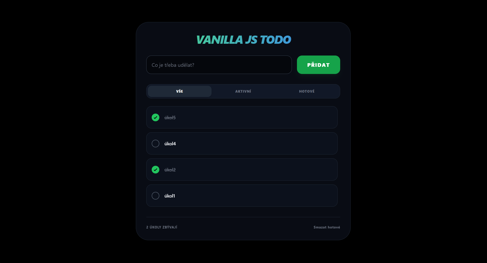

Todo List
Demonstrace základní manipulace s DOMem, správy stavu a perzistence dat v prohlížeči.

Funkcionalita
CRUD Operace
Vytváření, čtení, úprava (stav) a mazání úkolů. Základní stavební kameny každé interaktivní aplikace.
LocalStorage
Data jsou ukládána do paměti prohlížeče. Aplikace funguje offline a pamatuje si stav i po obnovení stránky.
Filtrování
Dynamické filtrování seznamu (Vše / Aktivní / Hotové) bez nutnosti opětovného načítání stránky.
Jak probíhá změna
Vanilla JS (Manuální DOM manipulace)
Při imperativním přístupu musíme prohlížeči přesně nadiktovat každý krok. Změna stavu automaticky neaktualizuje rozhraní. V naší aplikaci po přidání úkolu celý seznam fyzicky "zahodíme" a z cyklu znovu vygenerujeme všechny HTML elementy od nuly.
React (Virtuální DOM)
React aplikuje deklarativní přístup. Jakmile zavoláme stavovou funkci, React si na pozadí postaví novou kopii celé struktury (Virtuální DOM). Tuto kopii porovná se starou (proces zvaný Diffing) a do skutečného DOMu propíše pouze tu jednu novou položku.
Vue.js (Reaktivní Proxy + V-DOM)
Vue kombinuje chytrý reaktivní systém s Virtuálním DOMem. Při změně dat, systém sledování závislostí (založený na JS Proxy objektech) přesně ví, které komponenty tuto proměnnou používají. Překreslí tak novým V-DOMem pouze je, čímž si ušetří spoustu zbytečného porovnávání.
Svelte (Kompilovaná Reaktivita)
Svelte obchází celou zátěž Virtuálního DOMu. Už během buildu (kompilace) analyzuje kód a přesně ví, které proměnné se mění. Vytvoří miniaturní chirurgické příkazy, které při změně pole rovnou sáhnou do prohlížeče a upraví jen to, co je potřeba.
Angular (Signals & Change Detection)
Moderní Angular využívá Signály (Signals) pro takzvanou Fine-Grained reaktivitu. Když uživatel přidá úkol, Signál okamžitě upozorní framework, že se jeho hodnota změnila. Angular pak cíleně zaktualizuje pouze ty konkrétní DOM uzly, které jsou na tento Signál v šabloně napojené.
HTMX (Server-Side Rendering & Swap)
HTMX vrací logiku kompletně na server a prohlížeč neudržuje žádný datový stav. Po akci uživatele se odešle síťový požadavek (AJAX), backend (FastAPI) upraví databázi a vygeneruje hotový HTML fragment. HTMX tento kousek přijme a bleskově jím nahradí starou část stránky.